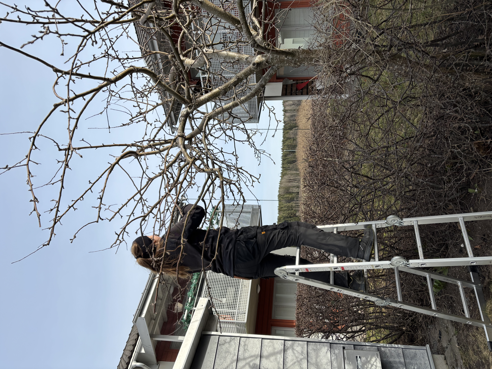
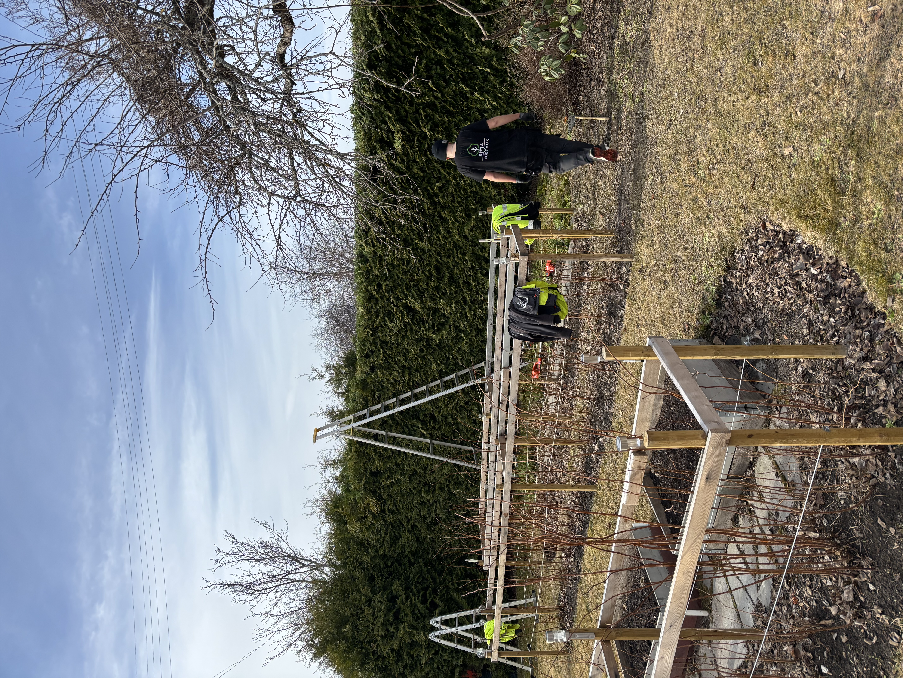

Vi erbjuder
Häck- och Trädbeskärning som utförs av våra TCYK-certifierade trädgårdsmästare vilket säkerställer att just era träd och häckar får en professionell beskärningsinsats vid rätt tidpunkt.


Tjänster
Professionell beskärning av TCYK-certifierade trädgårdsmästare – vid rätt tidpunkt, med rätt teknik.
Häck- och Trädbeskärning som utförs av våra TCYK-certifierade trädgårdsmästare vilket säkerställer att just era träd och häckar får en professionell beskärningsinsats vid rätt tidpunkt.

